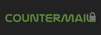
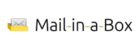

Du wirst beobachtet. Private und staatlich finanzierte Organisationen protokollieren und speichern deine online Aktivitäten. Ich biete hier Wissenswertes und Werkzeuge um deine Privatsphäre gegen die globale Massenüberwachung zu schützen.
"Privatsphäre? Ich hab nichts zu verbergen."
siehe auch: Wie antworte ich adäquat auf "Aber ich habe doch nichts zu verstecken." ?
Als ich die letzten 16 Monate überall auf der Welt über dieses Thema gesprochen habe,
sagte jedes Mal jemand zu mir: "Ich mache mir nicht wirklich Sorgen das jemand in meine Privatsphäre
eindringt, weil ich nichts zu verbergen habe." Ich sage dann immer dasselbe zu ihnen.
Ich hole einen Stift aus der Tasche, schreibe meine Email Adresse auf und sage
"Hier ist meine Email Adresse. Ich würde dich bitten mir alle deine Passwörter für alle deine
Email Accounts zu schicken, sobald du daheim bist. Nicht nur ein paar, sondern auch die
für deine Arbeit und wirklich ALLE. Ich möchte nämlich ein wenig herumstöbern was du online so treibst,
lesen was du lesen möchtest und alles Interessante, was ich finde, veröffentlichen.
Und was macht das schon, wenn du doch keine böse Person bist, wenn du nichts Verbotenes tust,
dann solltest du ja nichts zu verheimlichen haben."
Nicht ein Einziger ist auf dieses Angebot eingegangen.
Privatsphäre respektierende Suchmaschine
Beispielsuche: Edward Snowden
privatesearch.it-sec.rocks ist die neue Privatsphäre respektierende und stark konfigurierbare Suchmaschine mit exzellenten Ergebnissen.
Es ist Open Source, komplett werbefrei, logt keine IPs und verfolgt kein Nutzerverhalten.
Nutze kein Windows 10 - Es ist ein Privatsphäre Albtraum

- Datensynchronisation mit Microsoft ist standartmäßig aktiviert.
- besuchte und offene Webseiten.
- Einstellungen installierter Anwendungen.
- WLAN SSIDs und Passwörter.
- Zu jedem Gerät und Benutzerkonto wird eine eindeutige Werbe-ID erstellt.
- Dies wird genutzt, um dich mit Werbeeinblendungen von Drittanbietern und Werbenetzwerken versorgen zu können.
- Cortana darf ALLE deine Daten sammeln.
- Tastatureingaben, Suchanfragen und Mikrofon.
- Kalendereinträge.
- Musik, die du hörst.
- Kreditkarteninformationen.
- Einkäufe im Internet.
- Microsoft darf persönlichste Daten sammeln.
- Dein Name und Adresse | Identitätsdaten.
- Passwörter.
- Demographische Daten.
- Interessen und Gewohnheiten.
- Daten des täglichen Gebrauchs.
- Kontakte und Beziehungen (zueinander).
- Standortdaten.
- Den Inhalt von Emails, Kurznachrichten, Anruflisten, Audio- und Videoaufnahmen (Webcam).
- Deine Daten werden getauscht / verkauft.
- Wenn du Windows 10 herunterlädst wird Microsoft autorisiert alle oben erwähnten Daten an jeden Drittanbieter weiterzugeben, sowohl mit als auch ohne deine Zustimmung.
Quelle: heise.de
sowie: zeit.de
Mehr schlechte Nachrichten
- Selbst wenn Schnüffeldienste deaktiviert wurden telefoniert Microsoft nach Hause. - Golem.
- Updates werden in Windows 10 keine Beschreibung mehr enthalten, was sie tun und wofür sie gut sind. - Golem.
- Was die Windows 10 "Privatsphäre Albtraum" Einstellungen eigentlich tun. - Lifehacker (englisch!).
- Windows 10 behält sich Recht vor Spiele zu blocken und Hardware zu deaktivieren. - Techdirt (englisch!).
Ein paar gute Nachrichten
- Windows 10 Privatsphärenfix. - fix10.isleaked.com (englisch!)
- Windows 10 doesn’t offer much privacy by default: Here’s how to fix it. - Ars Technica.
- Guide: How to disable data logging in W10.
Globale Massenüberwachung - Die "Fourteen Eyes"

Das UKUSA Abkommen ist ein Abkommen zwischen Großbritannien (genauer UK), den USA, Australien, Kanada und Neuseeland,
um gemeinschaftlich Daten zu sammeln, zu analysieren und untereinander auszutauschen. Mitglieder dieser Gruppe,
bekannt als "Five Eyes", konzentrieren sich auf das Sammeln und analysieren vertraulicher Daten aus unterschiedlichen Teilen der Erde.
Während die Länder der Five Eyes zugestimmt haben sich nicht gegenseitig auszuspionieren, haben Enthüllungen von Snowden gezeigt
das manche Five Eyes Mitglieder die Bürger des Anderes überwachen und diese Erkenntnisse teilen um
einen Bruch innerstaatlichen Rechts zu vermeiden welches jedes Land für sich davon abhält die eigenen Bürger zu überwachen.
Die Five Eyes Allianz kooperiert auch mit Gruppen anderer Länder, um Informationen zu tauschen (und bilden so die "Nine Eyes" und "Fourteen Eyes").
Was auch immer die Absprachen sind, es ist erwiesen, dass die Five Eyes und ihre Partner sich gegenseitig ausspionieren können und das auch tun.
Five Eyes
2. Kanada
3. Neuseeland
4. Großbritannien (UK)
5. Vereinigte Staaten von Amerika
Nine Eyes
7. Frankreich
8. Niederlande
9. Norwegen
Fourteen Eyes
11. Deutschland
12. Italien
13. Spanien
14. Schweden
Warum ist es nicht ratsam einen in der USA beheimateten Dienst zu nutzen?

In den USA ansässige Dienste sind wegen der staatlichen Überwachungsprogramme nicht zu empfehlen.
Sogenannte National Security Letters (NSLs) und Verschwiegenheitsverpflichtungen ("Gag Order") der Unternehmen verbieten es
dem Empfänger über eine Anfrage staatlicher Behörden zu reden.
Diese Kombination erlaubt es der Regierung im Geheimen Firmen dazu zu zwingen kompletten und uneingeschränkten Zugang zu
Benutzerdaten zu erlangen, was mit dem NSL und der "Gag Order" also ein hervorragendes Werkzeug staatlicher Überwachung an de Hand gibt.
Ein trauriges dieser Beispiele ist Lavabit - einem mittlerweile eingestellten Anbieter sicherer Emails, gegründet von Ladar Levison. Das FBI verlangte die Herausgabe von Snowdens Aufzeichnungen nachdem sie herausgefunden hatten das er den Dienst benutzt hatte. Da Lavabit keine Logdateien anfertigt und der Inhalt der Emails verschlüsselt gespeichert wurde, überreichte das FBI eine Vorladung (inklusive "Gag Order") um an die SSL Schlüssel zu gelangen. Diese Schlüssel im Besitz zu haben würede es ihnen erlauben die Kommunikation JEDES Nutzers (sowohl Metadaten als auch unverschlüsselte Inhalte und Passwörter) in Echtzeit aus- und mitzulesen. Nicht nur die von Snowden.
Letztlich musste Levison die SSL Schlüssel überreichen und schloss seine Firma zur gleichen Zeit. Nun drohte die US Regierung Levison mit Gefängnis, mit der Begründung das Schließen seines Dienstes verstoße gegen den Gerichtsbeschluß.
Schlüssel Offenlegungs Gesetz - Wer darf Master- Serverkeys an Autoritäten übergeben?
Das obligatorische "Schlüssel Offenlegungs Gesetz" (key disclosure law) verlangt von jemandem Sicherheitsschlüssel an Strafverfolgungsbehörden zur Durchführung strafrechtlicher Ermittlungen zu übergeben. Wie diese Gesetze umgesetzt werden (wer legal gezwungen werden kann zu helfen) variiert je nach Land aber ein Haftbefehl ist in der Regel erforderlich. Abwehr gegen dieses Schlüssel Offenlegungs Gesetz beinhaltet Steganographie und Datenverschlüsselung nach dem Konzept der glaubhaften Abstreitbarkeit.
Steganographie beinhaltet versteckte sensible Informationen (welche verschlüsselt sein können) innerhalb gewöhnlicher Daten (zum Beispiel: ein Bild zu verschüsseln und es dann in einer Audiodatei verstecken). Mit glaubhafter Abstreitbarkeit meint man, Daten so zu verschlüsseln das ein Gegner nicht beweisen kann das Daten, hinter denen er her ist, existieren (zum Beispiel: entschlüsselt ein Passwort harmlose Daten und ein anderes Passwort, auf die gleiche Datei angewandt, entschlüsselt sensible Daten).
Weitere Informationen zum Thema
- Avoid all US and UK based services
- http://de.wikipedia.org/wiki/UKUSA_Vereinbarung
- http://de.wikipedia.org/wiki/Lavabit
- https://en.wikipedia.org/wiki/Key_disclosure_law
- http://en.wikipedia.org/wiki/Portal:Mass_surveillance
VPN Anbieter mit extra Sicherheit und Privatsphäre - unabhängig & unverbindlich
Teil 1
| VPN / Land | Server | Preis |
|---|---|---|
 AirVPN.org (Italien) |
76 | 54 € |
 AzireVPN.com (Schweden) |
3 | 45 € |
 blackVPN.com (Hong Kong) |
25 | 99 € |
 Cryptostorm.is (Island) |
13 | $ 52 |
 FrootVPN.com (Schweden) |
27 | $ 36 |
 hide.me (Malaysia) |
85 | $ 65 |
Teil 2
| VPN / Land | Server | Preis |
|---|---|---|
 IVPN.net (Gibraltar) |
15 | $ 100 |
 Mullvad.net (Schweden) |
23 | 60 € |
NordVPN.com (Panama) |
52 | $ 48 |
 Perfect-Privacy.com (Panama) |
40 | 150 € |
 Privatoria.net (Tschechische Republik) |
12 | $ 22,8 |
 Proxy.sh (Seychellen) |
288 | $ 90 |
Kriterien zur Wahl des VPN Anbieters
- Operiert außerhalb der USA oder anderer "Five Eyes" Länder. vermeide alle in US und UK beheimateten Dienste.
- OpenVPN Unterstützung.
- Datei-Tausch/ File-Sharing (P2P) wird auf bestimmten Servern geduldet.
- Akzeptiert Bitcoin, Bargeld oder Prepaid Karten als Zahlungsmethode.
- Benötigt keine persönlichen Informationen, um ein Benutzerkonto zu erstellen. Nur Benutzername, Passwort und Email.
Ich stehe in keinerlei geschäftlicher Beziehung mit diesen VPN Anbietern.
Nur so kann ich ernsthafte und unabhängige Empfehlungen aussprechen.
Weitere Informationen zu VPN
- How To Make VPNs Even More Secure
- VPN, privacy and anonymity - SpiderOak
- Beware of False Reviews - VPN Marketing and Affiliate Programs
- Which VPN Services Take Your Anonymity Seriously?
(Achtung: Die erst gelisteten Anbieter bei TorrentFreaks sind gesponsert!) - I am Anonymous When I Use a VPN - 7 Myths Debunked
(Achtung: Die Informationen sind zwar empfehlenswert aber der Artikel wird zur Selbstpropagation genutzt) - Proxy.sh VPN Provider Sniffed Server Traffic to Catch Hacker
- Ethical policy - All of the reasons why Proxy.sh might enable logging
- IVPN.net will collect your email and IP address after sign up
Read the Email statement from IVPN. - blackVPN announced to delete connection logs after disconnection
Was ist ein Warrant Canary?

Als "Warrant Canary" bezeichnet man ein Dokument oder Bild, das auf einer Seite einsehbar ist. Dies zeigt an, dass es in einem bestimmten Zeitabschnitt keine Zugriffe oder Anfragen von Ermittlungsbehörden gab. Wenn diese Datei eine gewisse zeitlang nicht aktualisiert wurde oder verschwindet ist das ein Zeichen dafür, dass der Anbieter eine Vorladung bekommen hat oder Daten offenlegen sollte. Dann sollte man den Dienst nicht mehr nutzen! Eingeführt wurden Warrant Canaries, um die so genannte Gag Order zu umgehen.
Warrant Canary Beispiele:
- https://proxy.sh/canary
- https://www.ivpn.net/resources/canary.txt
- https://www.vpnsecure.me/files/canary.txt
- https://www.bolehvpn.net/canary.html
- https://lokun.is/canary.txt
- https://www.ipredator.se/static/downloads/canary.txt
Weitere Informationen zum Warrant Canary
- Warrant Canary Frequently Asked Questions
- Canarywatch.org - Lists warrant canaries, tracks changes or disappearances of canaries
- Companies and organizations with warrant canaries
Browser Empfehlungen
Mozilla Firefox
 Firefox ist schnell, zuverlässig, Open Source und respektiert deine Privatsphäre. Vergiss nicht die Optionen gemäß unseren Empfehlungen einzustellen: WebRTC und about:config und hol dir die Privatsphäre AddOns.
Firefox ist schnell, zuverlässig, Open Source und respektiert deine Privatsphäre. Vergiss nicht die Optionen gemäß unseren Empfehlungen einzustellen: WebRTC und about:config und hol dir die Privatsphäre AddOns.
OS: Windows, Mac, Linux, Android, BSD.
 Der Tor Browser ist eine gute Wahl wenn du Plus an Anonymität wünscht. Es ist ein modifizierter Firefox und hat vorinstallierte Privatsphäre AddOns, Verschlüsselung und einen erweiterten Proxy.
Der Tor Browser ist eine gute Wahl wenn du Plus an Anonymität wünscht. Es ist ein modifizierter Firefox und hat vorinstallierte Privatsphäre AddOns, Verschlüsselung und einen erweiterten Proxy. Profil für den Firefox, insbesondere für anonymes und sicheres surfen gedacht.
Profil für den Firefox, insbesondere für anonymes und sicheres surfen gedacht.Erwähnenswert
- Links2 - ist ein leichtgewichtiger (textbasierter) Konsolenbrowser. Kann auch in einem grafischen Modus betrieben werden. Verfügbar für Linux (in den Repos) und mit CygWin auch unter Windows.
Browser Fingerabdruck - Ist dein Browser einzigartig?
Sobald du eine Webseite besuchst sendet dein Browser bereitwillig Daten über seine Konfiguration. Daten wie unterstützte Schriften, Browser Typ (UserAgent), Bildschirmauflösung und installierte AddOns. Wenn diese Art von Information einzigartig ist, ist es möglich dich zu identifizieren und mit Cookies zu verfolgen. EFF hat ein Tool namens Panopticlick entwickelt, um zu testen wie einzigartig dein Browser ist.
Wenn du weißt was die meisten Browser von sich preisgeben kann diese Erkenntnisse genutzt werden. Das bedeutet installierte Schriftarten, Plugins, und Erweiterungen zu verwenden, die von der Masse der Menschen genutzt werden . Du solltest einen gefälschten User Agent verwenden, um der großen Nutzerschaft besser zu entsprechen. Du solltest die gleichen Einstellungen aktiviert und deaktiviert haben, sowas wie DoNotTrack und WebGL. Dein Browser sollte so auffällig und gewöhnlich sein wie jeder andere auch. Deaktiviertes JavaScript, die Nutzung von Linux und sogar das Tor Browser Bundle wird dein Browser schnell aus der Masse herausstechen lassen.
Moderne Webbrowser sind nicht dazu entwickelt worden die persönliche Privatsphäre und Datenschutz zu gewährleisten. Es ist wohl besser freie Software Plugins wie PrivacyBadger, uBlock Origin und Disconnect zu nutzen als sich über seinen Fingerabdruck Gedanken zu machen. Diese respektieren nicht nur deine Freiheit, sondern auch deine Privatsphäre. Das wird dir mehr nutzen als zu versuchen den Fingerabdruck deines Browsers zu manipulieren.
weitere Information
- How Unique Is Your Web Browser? Peter Eckersley, Electronic Frontier Foundation.
- Eine Diskussion auf reddit.com über Browserfingerprinting.
- Firefox Privatsphäre AddOns.
- BrowserLeaks.com - Webbrowser Sicherheitstest, sagt dir welche persönlichen Daten ungefragt von dir erfasst werden, wenn du dich im Internet bewegst.
WebRTC IP Lücke - Wird deine IP verraten?
Auch wenn Software wie NoScript dies verhindern kann ist es gegebenefalls keine schlechte Idee das Protokoll direkt zu blockieren.
Wie kann ich WebRTC im Firefox abschalten?
Kurz und knapp: Setze "media.peerconnection.enabled" auf "false" in der "about:config".
Oder: Ich empfehle hier das Firefox AddOn Statutory!
Erklärung zum manuellen Abschalten:
- Gib "about:config" in der Firefox Adressleiste ein und drücke Enter.
- Bestätige "Ich werde vorsichtig sein, versprochen!" mit einem Klick darauf
- Suche nach "media.peerconnection.enabled"
- Doppelklicke darauf und der "Wert" sollte nun auf "false" stehen
- Super. Mach den WebRTC Test gleich nochmal.
Wenn du sicher gehen willst, dass jede WebRTC bezogene Funktion deaktiviert ist musst du folgende Einstellungen ändern:
- media.peerconnection.turn.disable = true
- media.peerconnection.use_document_iceservers = false
- media.peerconnection.video.enabled = false
- media.peerconnection.identity.timeout = 1
Nun kannst du 100% sicher sein, dass WebRTC deaktiviert wurde.
Und wie kann ich WebRTC im Google Chrome deaktivieren?
Dafür gibt es noch keine bekannte Lösung, nur ein Plugin, welches aber einfach umgangen werden kann. Benutze einfach Firefox stattdessen.
Was ist mit anderen Browsern?
Chrome auf iOS, Internet Explorer und Safari haben WebRTC noch nicht implementiert. Allerdings kann man wirklich nur empfehlen Firefox auf jedem Gerät zu verwenden.
Exzellente Firefox AddOns
PrivacyBadger gegen Werbenetzwerke

Privacy Badger ist ein Browser AddOn das Werbenetzwerke und andere Drittanbieter die dich heimlich ausspionieren, welche Seiten du gerade besuchst und bereits besucht hast, blockt. PrivacyBadger blockiert automatisch das laden weiterer Daten aus und in Werbenetzen.
https://addons.mozilla.org/de/firefox/addon/privacy-badger-firefox/
"Dolus" verbirgt deine IP im X-Forward Header
Dolus versteckt deine echte IP vor Webseiten durch das Senden von X-Forwarded-For-Header mit gefälschten IP-Adressen. Der X-Forwarded-For-Request-Header wird von Proxies verwendet, um Web-Servern mitzuteilen welche IP-Adressen sie an die Seite weiterleiten.
https://addons.mozilla.org/de/firefox/addon/dolus/
Gegen WebRTC mit "Statutory"
Statutory schützt dich zuverlässig gegen die WebRTC "Lücke" und versteckt deine echte IP.
https://addons.mozilla.org/de/firefox/addon/statutory/
Stoppe die Verfolgung mit "Disconnect"

Disconnect wurde 2011 von 2 ehemaligen Google Entwicklern und anderen Leuten gegründet. Das AddOn ist quelloffen und deine besuchten Webseiten etwa 27% schneller. Auch wird das Tracking von über 2,000 Drittanbieterseiten geblockt. Suchanfragen werden auch anonymisiert.
https://addons.mozilla.org/de/firefox/addon/disconnect/
Werbung blocken mit "uBlock Origin"

uBlock Origin Ein effizienter Blocker: Geringer Speicherbedarf und niedrige CPU-Belastung - und dennoch werden Tausende an Filtern mehr angewendet als bei anderen populären Blockern. AdBlock Plus wird nicht empfohlen, da dort "gute Werbung" angezeigt wird und das System dahinter ist nicht sehr transparent.
https://addons.mozilla.org/de/firefox/addon/ublock-origin/
erschwere den Browser Fingerabdruck mit "Random Agent Spoofer"

Random Agenten Spoofer ist ein datenschutzfreundliches Firefox AddOn, das Browser-Fingerprinting behindern soll. Dies geschieht durch Ändern des Browser / Geräteprofils nach einem Timer.
https://addons.mozilla.org/de/firefox/addon/random-agent-spoofer/
"Self-Destructing Cookies" - Cookies automatisch löschen

Self-Destructing Cookies entfernt automatisch Cookies, wenn sie nicht mehr vom offenen Browser-Tabs verwendet werden. (dauerhafte) Cookies sowie Informationen die benutzt werden, um dich auszuspionieren, werden ausgelöscht.
https://addons.mozilla.org/de/firefox/addon/self-destructing-cookies/
Immer verschlüsseln mit "HTTPS Everywhere"

HTTPS Everywhere ist eine Firefox, Chrome und Opera Erweiterung, die deine Kommunikation mit vielen großen Websites verschlüsselt, so dass du sicherer surfst. Eine Zusammenarbeit zwischen "The Tor Project" und der "Electronic Frontier Foundation".
https://www.eff.org/https-everywhere
Hol dir die absolute Kontrolle zurück mit "NoScript Security Suite"

Sehr anpassbares Plugin um selektiv Javascript, Java und Flash auf vertrauenswürdigen Seiten zu erlauben. Nicht für den Normal- oder Gelegenheitsnutzer, da es gutes technisches Hintergrundwissen voraussetzt.
https://addons.mozilla.org/de/firefox/addon/noscript/
inhaltliche Kontrolle mit "Policeman"
Dieses AddOn funktioniert ähnlich wie RequestPolicy und NoScript. Es unterscheidet sich dahingehend, dass Regelsätze nach Inhaltstyp erstellt werden können. Zum Beispiel kann man Bilder erlauben aber keine Scripte oder eingebette Frames. Kann auch als Blacklist eingesetzt werden.
https://addons.mozilla.org/de/firefox/addon/policeman/
Firefox: Einstellungen zum Datenschutz in der "about:config"
Vorbereitung:
- Gib "about:config" in die Firefox Adressleiste ein und drücke Enter.
- Bestätige "Ich werde vorsichtig sein, versprochen!"
- Folge den unten stehenden Anweisungen...
Fangen wir an:
- privacy.trackingprotection.enabled = true
- Das ist der neue Trackingschutz von Mozilla.
- geo.enabled = false
- Deaktiviert Geolocation (zBsp Ortung per IP).
- browser.safebrowsing.enabled = false
- Deaktiviert Googles Safe Browsing und Phishingschutz. Sicherheitsrisiko aber erhöht Datenschutz.
- browser.safebrowsing.malware.enabled = false
- Deaktiviert Googles Safe Browsing und Schadware Prüfung. Sicherheitsrisiko aber erhöht Datenschutz.
- dom.event.clipboardevents.enabled = false
- Deaktiviert die Funktion, dass Webseiten darüber informiert werden wenn man etwas kopiert, einfügt oder ausschneidet und wo auf der Webseite man das tut.
- network.cookie.cookieBehavior = 1
- Cookies deaktivieren
- 0 = Akzeptiert alle Cookies
- 1 = Akzeptiert nur Cookies der aufgerufenen Seite (blockt Drittanbieter Cookies)
- 2 = Blockt alle Cookies
- network.cookie.lifetimePolicy = 2
- Cookies werden beim Beenden der Sitzung gelöscht
- 0 = Akzeptiert jeden Cookie
- 1 = Fragt bei jedem Cookie nach
- 2 = Nur für die aktuelle Sitzung
- 3 = Akzeptiert für "N" Tage
- browser.cache.offline.enable = false
- Deaktiviert Offline Zwischenspeicher.
- browser.send_pings = false
- Die Funktion würde genutzt werden, um die Klicks der Besucher einer Webseite zu verfolgen.
- webgl.disabled = true
- WebGL ist ein potenzielles Sicherheitsrisiko. Quelle
- dom.battery.enabled = false
- Webseitenbetreiber könnten damit den Batteriestatus der Notebooks / Smartphones von Besuchern der Seite abfragen. Quelle
- browser.sessionstore.max_tabs_undo = 0
- Auch wenn Firefox so eingestellt ist den Verlauf nicht zu speichern würden deine geschlossenen Tabs erst einmal zwischengespeichert werden.
Weitere Informationen
- mozillazine.org - Security and privacy-related preferences.
- user.js Firefox hardening stuff - This is a user.js configuration file for Mozilla Firefox that's supposed to harden Firefox's settings and make it more secure.
Empfehlenswerte E-Mail-Anbieter
| Email Anbieter | Existiert seit | Server | Speicher | Preis pro Jahr | Bitcoin | Verschlüsselung | eigene Domain möglich? |
|---|---|---|---|---|---|---|---|
GhostMail |
2015 | Schweden | 1 GB | kostenlos | ja | integriert | nein |
OpenMailBox |
2013 | Frankreich | 1 GB | kostenlos | ja | integriert | nein |
 ProtonMail |
2013 | Schweiz | 500 MB | kostenlos | ja | integriert | nein |
 Tutanota |
2011 | Deutschland | 1 GB | kostenlos | ja | integriert | ja |
Whiteout.io |
2014 | Deutschland | 2 GB | kostenlos | nein | integriert | nein |
 Mailbox.org |
2014 | Deutschland | 2 GB | 12 € | ja | integriert | ja |
 Posteo |
2009 | Deutschland | 2 GB | 12 € | nein | integriert | nein |
Runbox |
1999 | Norwegen | 1 GB | $ 19.95 | nein | nein | ja |
 Neomailbox |
2003 | Schweiz | 1 GB | $ 49.95 | ja | integriert | ja |
|  CounterMail |
2010 | Schweden | 500 MB | $ 59 | ja | integriert | ja |
 StartMail |
2014 | Niederlande | 10 GB | $ 59.95 | nein | integriert | nein |
 KolabNow |
2010 | Schweiz | 2 GB | $ 60 | ja | nein | ja |
 CryptoHeaven |
2001 | Kanada | 200 MB | $ 66 | nein | integriert | ja |
Wegwerf Email-Anbieter
- Wegwerfemailadresse.com - Wegwerf-eMail-Adresse ist ein kostenloses System für provisorische E-Mail-Adressen. Wenn du dich irgendwo registrieren und deine richtige Emailadresse nicht angeben möchtest, dann kannst du dir hier für 24 Stunden eine temporäre Adresse generieren.
- Squizzy - Squizzy.de stellt dir temporäre Wegwerf-E-Mail-Adressen zur Verfügung, um dich vor Spam zu schützen. Die E-Mail-Adresse verfällt nach 60 Minuten. Du kannst innerhalb des Zeitfensters eingehende E-Mails lesen und darauf antworten.
Werde dein eigener Mailanbieter mit einem eigenen Mailserver
Gehe noch einen Schritt weiter und erhalte die Kontrolle über deine E-Mail mit dem einfach zu implementierenden Mail-Server. Mit Mail-in-a-Box kannst du eigener Mail-Diensteanbieter in ein paar einfachen Schritten werden. Es ist irgendwie wie dein eigenes Gmail, aber mit voller Kontrolle. Technisch macht Mail-In-a-Box einen Cloud Server zum funktionierenden Mail-Server. Aber du musst kein Technologie-Experte sein, um es einzurichten. Mehr: https://mailinabox.email/
Email Erweiterungen, die Privatsphäre schätzen
- gpg4usb - A very easy to use and small portable editor to encrypt and decrypt any text-message or -file. For Windows and Linux.
- Mailvelope - A browser extension that enables the exchange of encrypted emails following the OpenPGP encryption standard.
- Enigmail - A security extension to Thunderbird and Seamonkey. It enables you to write and receive email messages signed and/or encrypted with the OpenPGP standard.
- TorBirdy - This extension configures Thunderbird to make connections over the Tor anonymity network.
- Email Privacy Tester - This tool will sent an Email to your address and perform privacy related tests.
Weitere Informationen
- Aging ‘Privacy’ Law Leaves Cloud E-Mail Open to Cops - Data stored in the cloud for longer than 6 months is considered abandoned and may be accessed by intelligence agencies without a warrant. Learning: Use an external email client like Thunderbird or Enigmail, download your emails and store them locally. Never leave them on the server.
- OpenMailBox keeps one year logs of meta-data - Forum discussion, reply of the server admin.
- With May First/Riseup Server Seizure, FBI Overreaches Yet Again
- Autistici/Inventati server compromised - The cryptographic services offered by the Autistici/Inventati server have been compromised on 15th June 2004. It was discovered on 21st June 2005. One year later. During an enquiry on a single mailbox, the Postal Police may have tapped for a whole year every user's private communication going through the server autistici.org/inventati.org.
Email Client Software
Thunderbird
 Thunderbird ist eine freie E-Mail-Anwendung, die man einfach einrichten und anpassen kann − und sie ist voll mit tollen Funktionen!. Thunderbird kann Email, Newsgroups, RSS Feeds und (XMPP, IRC, Twitter) Chat. Außerdem ist es durch tausende AddOns erweiterbar.
Thunderbird ist eine freie E-Mail-Anwendung, die man einfach einrichten und anpassen kann − und sie ist voll mit tollen Funktionen!. Thunderbird kann Email, Newsgroups, RSS Feeds und (XMPP, IRC, Twitter) Chat. Außerdem ist es durch tausende AddOns erweiterbar.Erwähnenswert:
- K-9 Mail - An independent mail application for Android. It supports both POP3 and IMAP mailboxes, but only supports push mail for IMAP.
- GNU Privacy Guard - Email Encryption. GnuPG is a GPL Licensed alternative to the PGP suite of cryptographic software. Use GPGTools for Mac OS X.
- Mailpile (Beta) - A modern, fast web-mail client with user-friendly encryption and privacy features.
Email Alternativen
Bitmessage
 Bitmessage is a P2P communications protocol used to send encrypted messages to another person or to many subscribers. It is decentralized and trustless, meaning that you need-not inherently trust any entities like root certificate authorities. It uses strong authentication which means that the sender of a message cannot be spoofed, and it aims to hide "non-content" data.
Bitmessage is a P2P communications protocol used to send encrypted messages to another person or to many subscribers. It is decentralized and trustless, meaning that you need-not inherently trust any entities like root certificate authorities. It uses strong authentication which means that the sender of a message cannot be spoofed, and it aims to hide "non-content" data.
OS: Windows, Mac, Linux.
I2P-Bote
 I2P-Bote is a fully decentralized and distributed email system. It supports different identities and does not expose email headers. Currently (2015), it is still in beta version and can be accessed via its web application interface or IMAP and SMTP. All bote-mails are transparently end-to-end encrypted and, optionally, signed by the sender's private key.
I2P-Bote is a fully decentralized and distributed email system. It supports different identities and does not expose email headers. Currently (2015), it is still in beta version and can be accessed via its web application interface or IMAP and SMTP. All bote-mails are transparently end-to-end encrypted and, optionally, signed by the sender's private key.
OS: Windows, Mac, Linux, Android, F-Droid.
Pond - experimentell
Pond is forward secure, asynchronous messaging for the discerning. Pond messages are asynchronous, but are not a record; they expire automatically a week after they are received. Pond seeks to prevent leaking traffic information against everyone except a global passive attacker. Build instructions are OS: Ubuntu, Debian Wheezy, Tails, Fedora, Arch and Mac OS X.
OS: Mac, Linux.
Erwähnenswert:
- RetroShare - Open Source cross-platform, Friend-2-Friend and secure decentralised communication platform.
Web Suchmaschinen, die deine Privatheit respektieren
privatesearch
Eine quelloffene Metasuchmaschine. Aggregation der Ergebnisse anderer Suchmaschinen, während keine Informationen über seine Nutzer gespeichert werden. Keine Protokolle, keine Werbung und keine Verfolgung/ tracking.
DuckDuckGo
 Die Suchmaschine, die dich nicht trackt. Etwas von DuckDuckGo's Code wird als freie Software auf GitHub gestellt aber die Kernsoftware ist proprietär. Firmensitz ist in den USA.
Die Suchmaschine, die dich nicht trackt. Etwas von DuckDuckGo's Code wird als freie Software auf GitHub gestellt aber die Kernsoftware ist proprietär. Firmensitz ist in den USA.
Erwähnenswert:
- MetaGer - A metasearch engine, which is based in Germany. It focuses on protecting the user's privacy. Supported by 24 own crawlers of small scale web search engines.
- ixquick.com - Returns the top ten results from multiple search engines. It uses a "Star System" to rank its results by awarding one star for every result that has been returned from a search engine. Based in the USA and the Netherlands.
- Google search link fix - Firefox extension that prevents Google, Yahoo and Yandex search pages from modifying search result links when you click them. This is useful when copying links but it also helps privacy by preventing the search engines from recording your clicks. (Open Source)
Verschlüsselte Sofortnachrichtendienste
Am sichersten: ChatSecure
 ChatSecure is a free and open source messaging app that features OTR encryption over XMPP. You can connect to your existing accounts on Facebook or Google, create new accounts on public XMPP servers (including via Tor), or even connect to your own server for extra security. ChatSecure only uses well-known open source cryptographic libraries to keep your conversations private.
ChatSecure is a free and open source messaging app that features OTR encryption over XMPP. You can connect to your existing accounts on Facebook or Google, create new accounts on public XMPP servers (including via Tor), or even connect to your own server for extra security. ChatSecure only uses well-known open source cryptographic libraries to keep your conversations private.
OS: iOS, Android, other OTR Clients.
Mobil: TextSecure / Signal
TextSecure and Signal are mobile apps developed by Open Whisper Systems. The company also developed RedPhone. All three apps are able to communicate with each other. The apps provide end-to-end encryption for your text messages. TextSecure is free and open source, enabling anyone to verify its security by auditing the code. Encrypted group chats are also supported.
OS: Android, iOS.
Für Browser: Cryptocat
Cryptocat is an open source web and mobile application intended to allow secure, encrypted online chatting. Cryptocat uses end-to-end encryption and encrypts chats on the client side, only trusting the server with data that is already encrypted. Cryptocat's stated goal is to make encrypted communications more accessible to average users.
OS: Firefox, Chrome, Safari, Opera, Mac, iOS, Linux.
Erwähnenswert:
- Ricochet - A peer-to-peer instant messaging system built on Tor hidden services. Your login is your hidden service address, and contacts connect to you through Tor.
- Kontalk - A community-driven instant messaging network. Supports end-to-end encryption. Both client-to-server and server-to-server channels are fully encrypted.
- Conversations - An open source Jabber/XMPP client for Android 4.0+ smart phones. Supports end-to-end encryption with either OTR or openPGP.
Weitere Informationen
- Secure Messaging Scorecard | Electronic Frontier Foundation
Which apps and tools actually keep your messages safe? - Chatting in Secret While We're All Being Watched - firstlook.org
Verschlüsselte Video & Sprach Messenger
RedPhone / Signal (Mobil)
RedPhone and Signal are mobile apps developed by Open Whisper Systems. The company also developed TextSecure. All three apps are able to communicate with each other. The apps provide end-to-end encryption for your calls.
OS: iOS, Android.
 Linphone is an open source SIP Phone and a free voice over IP service, available on mobile and desktop environments and on web browsers. It supports ZRTP for end-to-end encrypted voice and video communication.
Linphone is an open source SIP Phone and a free voice over IP service, available on mobile and desktop environments and on web browsers. It supports ZRTP for end-to-end encrypted voice and video communication.Erwähnenswert:
- Tox - A free and open-source, peer-to-peer, encrypted instant messaging and video calling software.
- Subrosa - End to end encrypted communications platform. Supports text, voice, video including group chats.
- Ring (formerly SFLphone) - Gives you a full control over your communications and an unmatched level of privacy.
Encrypted Cloud Storage Services
Seafile - 100 GB Storage for $10/month
 Seafile offers 100 GB Storage for $10/month but also gives you the opportunity to host on your own server. Your data is stored in Germany or with Amazon Web Service in the US for the cloud version. Encrypt files with your own password.
Seafile offers 100 GB Storage for $10/month but also gives you the opportunity to host on your own server. Your data is stored in Germany or with Amazon Web Service in the US for the cloud version. Encrypt files with your own password.
Client OS: Windows, Mac, Linux, iOS, Android. Server: Linux, Raspberry Pi, Windows.
ownCloud - Choose your hoster
 Similar functionally to the widely used Dropbox, with the difference being that ownCloud is free and open-source, and thereby allowing anyone to install and operate it without charge on a private server, with no limits on storage space or the number of connected clients.
Similar functionally to the widely used Dropbox, with the difference being that ownCloud is free and open-source, and thereby allowing anyone to install and operate it without charge on a private server, with no limits on storage space or the number of connected clients.
Client OS: Windows, Mac, Linux, BSD, Unix, iOS, Android, Fire OS. Server: Linux.
Least Authority S4 - For Experts
 S4 (Simple Secure Storage Service) is Least Authority's verifiably secure off-site backup system for individuals and businesses. 100% client-side encryption and open source transparency. $25/month for unlimited storage. Servers are hosted with Amazon S3 in the US.
S4 (Simple Secure Storage Service) is Least Authority's verifiably secure off-site backup system for individuals and businesses. 100% client-side encryption and open source transparency. $25/month for unlimited storage. Servers are hosted with Amazon S3 in the US.
OS: Linux, Windows, Mac, OpenSolaris, BSD. (Installation for advanced users)
Related Infromation
- Cryptomator - Free client-side AES encryption for your cloud files. Open source software: No backdoors, no registration.
- reddit.com - Should SpiderOak be avoided? Read the discussion in our subreddit.
Self-Hosted Cloud Server Software
Seafile
Seafile is a file hosting software system. Files are stored on a central server and can by synchronized with personal computers and mobile devices via the Seafile client. Files can also be accessed via the server's web interface.
Client OS: Windows, Mac, Linux, iOS, Android. Server: Linux, Raspberry Pi, Windows.
 Pydio is open source software that turns instantly any server (on premise, NAS, cloud IaaS or PaaS) into a file sharing platform for your company. It is an alternative to SaaS Boxes and Drives, with more control, safety and privacy, and favorable TCOs.
Pydio is open source software that turns instantly any server (on premise, NAS, cloud IaaS or PaaS) into a file sharing platform for your company. It is an alternative to SaaS Boxes and Drives, with more control, safety and privacy, and favorable TCOs.Tahoe-LAFS
Tahoe-LAFS is a Free and Open decentralized cloud storage system. It distributes your data across multiple servers. Even if some of the servers fail or are taken over by an attacker, the entire file store continues to function correctly, preserving your privacy and security.
OS: Windows, Mac, Linux.
Worth Mentioning
- ownCloud - Free and open-source, allows anyone to install and operate it for free on a private server, with no limits on storage space or the number of connected clients.
Secure File Sync Software
Syncthing
Syncthing replaces proprietary sync and cloud services with something open, trustworthy and decentralized. Your data is your data alone and you deserve to choose where it is stored, if it is shared with some third party and how it's transmitted over the Internet.
OS: Windows, Mac, Linux, Android, BSD, Solaris.
Worth Mentioning
- git-annex - Allows managing files with git, without checking the file contents into git. While that may seem paradoxical, it is useful when dealing with files larger than git can currently easily handle, whether due to limitations in memory, time, or disk space..
Password Manager Software
Master Password - Cross-platform
Master Password is based on an ingenious password generation algorithm that guarantees your passwords can never be lost. Its passwords aren't stored: they are generated on-demand from your name, the site and your master password. No syncing, backups or internet access needed.
OS: Windows, Mac, Linux, iOS, Android, Web.
KeePass / KeePassX - Local
 KeePass is a free open source password manager, which helps you to manage your passwords in a secure way. All passwords in one database, which is locked with one master key or a key file. The databases are encrypted using the best and most secure encryption algorithms currently known: AES and Twofish. See also: KeePassX.
KeePass is a free open source password manager, which helps you to manage your passwords in a secure way. All passwords in one database, which is locked with one master key or a key file. The databases are encrypted using the best and most secure encryption algorithms currently known: AES and Twofish. See also: KeePassX.
OS: Windows, Mac, Linux, iOS, Android, BSD.
Encryptr - Cloud Based
 Encryptr is simple and easy to use. It stores your sensitive data like passwords, credit card data, PINs, or access codes, in the cloud. However, because it was built on the zero knowledge Crypton framework, Encryptr ensures that only the user has the ability to access or read the confidential information.
Encryptr is simple and easy to use. It stores your sensitive data like passwords, credit card data, PINs, or access codes, in the cloud. However, because it was built on the zero knowledge Crypton framework, Encryptr ensures that only the user has the ability to access or read the confidential information.
OS: Windows, Mac, Linux, Android.
Worth Mentioning
- Secure Password Generator - generates a unique set of custom, high quality, cryptographic-strength password strings which are safe for you to use.
- SuperGenPass - A master password and the domain name of the Web site you are visiting is used as the “seed†for a one-way hash algorithm (base-64 MD5). The output of this algorithm is your generated password. You remember one password (your “master passwordâ€), and SGP uses it to generate unique, complex passwords for the Web sites you visit. Your generated passwords are never stored or transmitted, so you can use SGP on as many computers as you like without having to “sync†anything.
- Password Safe - Whether the answer is one or hundreds, Password Safe allows you to safely and easily create a secured and encrypted user name/password list. With Password Safe all you have to do is create and remember a single "Master Password" of your choice in order to unlock and access your entire user name/password list.
Related Infromation
File Encryption Software
VeraCrypt - Disk Encryption
 VeraCrypt is a source-available freeware utility used for on-the-fly encryption. It can create a virtual encrypted disk within a file or encrypt a partition or the entire storage device with pre-boot authentication. VeraCrypt is a fork of the discontinued TrueCrypt project. It was initially released on June 22, 2013. According to its developers, security improvements have been implemented and issues raised by the initial TrueCrypt code audit have been addressed.
VeraCrypt is a source-available freeware utility used for on-the-fly encryption. It can create a virtual encrypted disk within a file or encrypt a partition or the entire storage device with pre-boot authentication. VeraCrypt is a fork of the discontinued TrueCrypt project. It was initially released on June 22, 2013. According to its developers, security improvements have been implemented and issues raised by the initial TrueCrypt code audit have been addressed.
OS: Windows, Mac, Linux.
GNU Privacy Guard - Email Encryption
GnuPG is a GPL Licensed alternative to the PGP suite of cryptographic software. GnuPG is compliant with RFC 4880, which is the current IETF standards track specification of OpenPGP. Current versions of PGP (and Veridis' Filecrypt) are interoperable with GnuPG and other OpenPGP-compliant systems. GnuPG is a part of the Free Software Foundation's GNU software project, and has received major funding from the German government. GPGTools for Mac OS X.
OS: Windows, Mac, Linux, Android, BSD.
PeaZip - File Archive Encryption
PeaZip is a free and open-source file manager and file archiver made by Giorgio Tani. It supports its native PEA archive format (featuring compression, multi volume split and flexible authenticated encryption and integrity check schemes) and other mainstream formats, with special focus on handling open formats. It supports 181 file extensions (as of version 5.5.1).
Mac alternative: Keka is a free file archiver.
OS: Windows, Linux, BSD.
Worth Mentioning
- Cryptomator - Free client-side AES encryption for your cloud files. Open source software: No backdoors, no registration.
- miniLock - Browser plugin for Google Chrome / Chromium to encrypt files using a secret passphrase. Easy to use. From the developer of Cryptocat.
- AES Crypt - Using a powerful 256-bit encryption algorithm, AES Crypt can safely secure your most sensitive files. For Windows, Mac, Linux and Android.
- DiskCryptor - A full disk and partition encryption system for Windows including the ability to encrypt the partition and disk on which the OS is installed.
Self-contained Networks
I2P Anonymous Network
The Invisible Internet Project (I2P) is a computer network layer that allows applications to send messages to each other pseudonymously and securely. Uses include anonymous Web surfing, chatting, blogging and file transfers. The software that implements this layer is called an I2P router and a computer running I2P is called an I2P node. The software is free and open source and is published under multiple licenses.
OS: Windows, Mac, Linux, Android, F-Droid.
GNUnet Framework
 GNUnet is a free software framework for decentralized, peer-to-peer networking and an official GNU package. The framework offers link encryption, peer discovery, resource allocation, communication over many transports (such as tcp, udp, http, https, wlan and bluetooth) and various basic peer-to-peer algorithms for routing, multicast and network size estimation.
GNUnet is a free software framework for decentralized, peer-to-peer networking and an official GNU package. The framework offers link encryption, peer discovery, resource allocation, communication over many transports (such as tcp, udp, http, https, wlan and bluetooth) and various basic peer-to-peer algorithms for routing, multicast and network size estimation.
OS: GNU/Linux, FreeBSD, NetBSD, OpenBSD, Mac, Windows.
The Freenet Project
Freenet is a peer-to-peer platform for censorship-resistant communication. It uses a decentralized distributed data store to keep and deliver information, and has a suite of free software for publishing and communicating on the Web without fear of censorship. Both Freenet and some of its associated tools were originally designed by Ian Clarke, who defined Freenet's goal as providing freedom of speech on the Internet with strong anonymity protection.
OS: Windows, Mac, Linux.
Worth Mentioning
- Tor Project - Provides anonymity to websites and other servers. Servers configured to receive connections only through Tor are called hidden services.
- RetroShare - Open Source cross-platform, Friend-2-Friend and secure decentralised communication platform.
Decentralized Social Networks
diaspora*
 diaspora* is based on three key philosophies: Decentralization, freedom and privacy. It is intended to address privacy concerns related to centralized social networks by allowing users set up their own server (or "pod") to host content; pods can then interact to share status updates, photographs, and other social data.
diaspora* is based on three key philosophies: Decentralization, freedom and privacy. It is intended to address privacy concerns related to centralized social networks by allowing users set up their own server (or "pod") to host content; pods can then interact to share status updates, photographs, and other social data.
Friendica
Friendica has an emphasis on extensive privacy settings and easy server installation. It aims to federate with as many other social networks as possible. Currently, Friendica users can integrate contacts from Facebook, Twitter, Diaspora, GNU social, App.net, Pump.io and other services in their social streams.
GNU social
 While offering functionality similar to Twitter, GNU social seeks to provide the potential for open, inter-service and distributed communications between microblogging communities. Enterprises and individuals can install and control their own services and data. Notable public deployments are quitter.se and gnusocial.no.
While offering functionality similar to Twitter, GNU social seeks to provide the potential for open, inter-service and distributed communications between microblogging communities. Enterprises and individuals can install and control their own services and data. Notable public deployments are quitter.se and gnusocial.no.
Worth Mentioning
- Libertree - A free, libre, open-source software which is intended to provide a way for people to create their own social network. Currently in an invitational alpha phase.
Related Information
- Delete your Facebook account - Direct link to delete your Facebook account without being able to reactivate it again.
- How To Permanently Delete A Facebook Account - This guide will take you through a smooth and successful Facebook account deletion.
Domain Name System (DNS)
ClouDNS - Service
Free DNS, Managed DNS and DDoS Protected DNS hosting with included web redirects, mail forwards and Round-Robin load balancing. Instant updates in Europe, North America, Asia and Australia. ClouDNS have a self developed system for management and DNS synchronization. Every customer can see where his domain zone is up-to-date and running.
OS: Cross-platform.
DNSCrypt - Tool
 A protocol for securing communications between a client and a DNS resolver. The DNSCrypt protocol uses high-speed high-security elliptic-curve cryptography and is very similar to DNSCurve, but focuses on securing communications between a client and its first-level resolver.
A protocol for securing communications between a client and a DNS resolver. The DNSCrypt protocol uses high-speed high-security elliptic-curve cryptography and is very similar to DNSCurve, but focuses on securing communications between a client and its first-level resolver.
OS: Windows, Mac, Linux, iOS with Jailbreak.
OpenNIC - Service
 OpenNIC is an alternate network information center/alternative DNS root which lists itself as an alternative to ICANN and its registries. Like all alternative root DNS systems, OpenNIC-hosted domains are unreachable to the vast majority of the Internet. Only specific configuration in one's DNS resolver makes these reachable, and very few Internet service providers have this configuration.
OpenNIC is an alternate network information center/alternative DNS root which lists itself as an alternative to ICANN and its registries. Like all alternative root DNS systems, OpenNIC-hosted domains are unreachable to the vast majority of the Internet. Only specific configuration in one's DNS resolver makes these reachable, and very few Internet service providers have this configuration.
OS: Cross-platform.
Worth Mentioning
- Namecoin - A decentralized DNS open source information registration and transfer system based on the Bitcoin cryptocurrency.
Productivity Tools
Etherpad
 Etherpad is a highly customizable Open Source online editor providing collaborative editing in really real-time. Etherpad allows you to edit documents collaboratively in real-time, much like a live multi-player editor that runs in your browser. Write articles, press releases, to-do lists, etc.
Etherpad is a highly customizable Open Source online editor providing collaborative editing in really real-time. Etherpad allows you to edit documents collaboratively in real-time, much like a live multi-player editor that runs in your browser. Write articles, press releases, to-do lists, etc.
OS: Windows, Mac, Linux.
EtherCalc
 EtherCalc is a web spreadsheet. Data is saved on the web, and people can edit the same document at the same time. Changes are instantly reflected on all screens. Work together on inventories, survey forms, list management, brainstorming sessions..
EtherCalc is a web spreadsheet. Data is saved on the web, and people can edit the same document at the same time. Changes are instantly reflected on all screens. Work together on inventories, survey forms, list management, brainstorming sessions..ProtectedText
Worth Mentioning
- dudle - An online scheduling application, which is free and OpenSource. Schedule meetings or make small online polls. No email collection or the need of registration.
- Turtl - Remember ideas, track research, share documents, or bookmark your favorite sites. Turtl makes it easy to organize your life and uses solid encryption to keep it all safe.
PC Operating Systems
 Trisquel is a Linux-based operating system derived from Ubuntu. The project aims for a fully free software system without proprietary software or firmware and uses Linux-libre, a version of the Linux kernel with the non-free code (binary blobs) removed.
Trisquel is a Linux-based operating system derived from Ubuntu. The project aims for a fully free software system without proprietary software or firmware and uses Linux-libre, a version of the Linux kernel with the non-free code (binary blobs) removed. Qubes is an open-source operating system designed to provide strong security for desktop computing. Qubes is based on Xen, the X Window System, and Linux, and can run most Linux applications and utilize most of the Linux drivers.
Qubes is an open-source operating system designed to provide strong security for desktop computing. Qubes is based on Xen, the X Window System, and Linux, and can run most Linux applications and utilize most of the Linux drivers.Warning
Worth Mentioning
- OpenBSD - A project that produces a free, multi-platform 4.4BSD-based UNIX-like operating system. Emphasizes portability, standardization, correctness, proactive security and integrated cryptography.
- Arch Linux - A simple, lightweight Linux distribution. It is composed predominantly of free and open-source software, and supports community involvement
- Whonix - A Debian GNU/Linux based security-focused Linux distribution. It aims to provide privacy, security and anonymity on the internet. The operating system consists of two virtual machines, a "Workstation" and a Tor "Gateway". All communication are forced through the Tor network to accomplish this..
Live CD Operating Systems
Tails
 Tails is a live operating system, that starts on almost any computer from a DVD, USB stick, or SD card. It aims at preserving privacy and anonymity, and helps to: Use the Internet anonymously and circumvent censorship; Internet connections go through the Tor network; leave no trace on the computer; use state-of-the-art cryptographic tools to encrypt files, emails and instant messaging.
Tails is a live operating system, that starts on almost any computer from a DVD, USB stick, or SD card. It aims at preserving privacy and anonymity, and helps to: Use the Internet anonymously and circumvent censorship; Internet connections go through the Tor network; leave no trace on the computer; use state-of-the-art cryptographic tools to encrypt files, emails and instant messaging.
KNOPPIX
 Knoppix is an operating system based on Debian designed to be run directly from a CD / DVD (Live CD) or a USB flash drive (Live USB), one of the first of its kind for any operating system. When starting a program, it is loaded from the removable medium and decompressed into a RAM drive. The decompression is transparent and on-the-fly.
Knoppix is an operating system based on Debian designed to be run directly from a CD / DVD (Live CD) or a USB flash drive (Live USB), one of the first of its kind for any operating system. When starting a program, it is loaded from the removable medium and decompressed into a RAM drive. The decompression is transparent and on-the-fly.
Puppy Linux
Worth Mentioning
- JonDo Live-CD - A secure, pre-configured environment for anonymous surfing and more. It is based on Debian GNU/Linux. The live system contains proxy clients for JonDonym, Tor Onion Router and Mixmaster remailer. JonDoFox is a pre-configured browser for anonymous web surfing and TorBrowser is installed too..
- Tiny Core Linux - A minimal Linux operating system focusing on providing a base system using BusyBox and FLTK. The distribution is notable for its size (15 MB) and minimalism, with additional functionality provided by extensions.
Mobile Operating Systems
Worth Mentioning
- Replicant - A free and open source operating system based on the Android, which aims to replace all proprietary Android components with their free software counterparts.
Open Source Router Firmware
OpenWrt
 OpenWrt is an operating system (in particular, an embedded operating system) based on the Linux kernel, primarily used on embedded devices to route network traffic. The main components are the Linux kernel, util-linux, uClibc and BusyBox. All components have been optimized for size, to be small enough for fitting into the limited storage and memory available in home routers.
OpenWrt is an operating system (in particular, an embedded operating system) based on the Linux kernel, primarily used on embedded devices to route network traffic. The main components are the Linux kernel, util-linux, uClibc and BusyBox. All components have been optimized for size, to be small enough for fitting into the limited storage and memory available in home routers.
pfSense
 pfSense is an open source firewall/router computer software distribution based on FreeBSD. It is installed on a computer to make a dedicated firewall/router for a network and is noted for its reliability and offering features often only found in expensive commercial firewalls. pfSense is commonly deployed as a perimeter firewall, router, wireless access point, DHCP server, DNS server, and as a VPN endpoint.
pfSense is an open source firewall/router computer software distribution based on FreeBSD. It is installed on a computer to make a dedicated firewall/router for a network and is noted for its reliability and offering features often only found in expensive commercial firewalls. pfSense is commonly deployed as a perimeter firewall, router, wireless access point, DHCP server, DNS server, and as a VPN endpoint.
LibreWRT
LibreWRT is a GNU/Linux-libre distribution for computers with minimal resources, such as the Ben Nanonote, ath9k based wifi routers, and other hardware that respects your freedom with emphasis on free software. It is used by the Free Software Foundation on their access point and router which provides network connectivity to portable computers in their office.
Worth Mentioning
- OpenBSD - A project that produces a free, multi-platform 4.4BSD-based UNIX-like operating system. Emphasizes portability, standardization, correctness, proactive security and integrated cryptography.
- DD-WRT - A is Linux-based firmware for wireless routers and wireless access points. It is compatible with several models of routers and access points.
Quotes
Arguing that you don't care about the right to privacy because you have nothing to hide is no different than saying you don't care about free speech because you have nothing to say.
The NSA has built an infrastructure that allows it to intercept almost everything. With this capability, the vast majority of human communications are automatically ingested without targeting. If I wanted to see your emails or your wife's phone, all I have to do is use intercepts. I can get your emails, passwords, phone records, credit cards. I don't want to live in a society that does these sort of things... I do not want to live in a world where everything I do and say is recorded. That is not something I am willing to support or live under.
We all need places where we can go to explore without the judgmental eyes of other people being cast upon us, only in a realm where we’re not being watched can we really test the limits of who we want to be. It’s really in the private realm where dissent, creativity and personal exploration lie.
Weitere empfohlene Quellen zum Thema
- ipleak.net - IP/DNS Detect - What is your IP, what is your DNS, what informations you send to websites.
- Surveillance Self-Defense by EFF - Guide to defending yourself from surveillance by using secure technology and developing careful practices.
- PRISM Break - We all have a right to privacy, which you can exercise today by encrypting your communications and ending your reliance on proprietary services.
- Security in-a-Box - A guide to digital security for activists and human rights defenders throughout the world.
- The Ultimate Privacy Guide - Excellent privacy guide written by the creators of the bestVPN.com website.
- IVPN Privacy Guides - These privacy guides explain how to obtain vastly greater freedom, privacy and anonymity through compartmentalization and isolation.
- AlternativeTo.net - Great collection of open source online and self-hosted software sorted by likes.
- Keybase.io - Get a public key, safely, starting just with someone's social media username.
- Security Now! - Weekly Internet Security Podcast by Steve Gibson and Leo Laporte.
- Reset The Net - Privacy Pack - Help fight to end mass surveillance. Get these tools to protect yourself and your friends.
- SecureDrop - An open-source whistleblower submission system that media organizations can use to securely accept documents from and communicate with anonymous sources. It was originally created by the late Aaron Swartz and is currently managed by Freedom of the Press Foundation.
Sag die Seite weiter und hilf deinen Freunden
Beteilige dich mit Vorschlägen oder gern auch Kritik
Tox ID: 96DBEC75B69DE689DF4375F82233AB489A2957200BF24574A0E472822A9ECC0F76D1BADE720D
Email: anregung{ät}it-sec.rocks
Für eine Webseite wie privacytools.it-sec.rocks ist es wichtig immer auf dem Laufenden zu sein. Halte die Augen offen, ob es für die hier aufgeführte Software Updates gibt. Folge den Nachrichten, ob es Neuigkeiten zu der von dir eingesetzten Software gibt. Ich versuche mein Bestes die Seite aktuell zu halten aber bin nicht perfekt, habe einen Job und das Internet ändert sich schnell. Wenn du Fehler findest oder der Meinung bist ein Anbieter sollte hier nicht aufgeführt werden, wenn ein Anbieter fehlt oder ein Browser Plugin nicht mehr die beste Wahl ist ... sprich bitte mit mir. Das ist ein gemeinschaftliches Projekt und das Ziel ist hier die besten Informationen zum Thema Sicherheit und Datenschutz zu vereinen.
Du kannst auch mithelfen:
Schau dir den Quellcode der Seite auf GitHub an und bring dich mit Verbesserungsvorschlägen ein: https://github.com/Anon215/privacytools.it-sec.rocksDanke für deine Teilnahme. Dieses Projekt braucht dich.
Keine Werbung, kein Google Analytics, keine verbundenen Unternehmen, keine Webseiten-übergreifende Anfragenfälschung
 Creative Commons
Creative Commons
 kopimi (copyme)
kopimi (copyme)
 Donate: 1HXZGhhximbCTK5fR7ShugebvXS4tPvW1v
Donate: 1HXZGhhximbCTK5fR7ShugebvXS4tPvW1v
privacytools.it-sec.rocks ist eine sozial motivierte Webseite, die Informationen bereitstellt um deine Daten und Privatsphäre zu schützen.
Vertraue niemals einer Firma deine persönlichsten Daten an, verschlüssele immer!